朗屏陳師傅－銀色新質生產力模型，數據賦能務實規劃以元朗為例。
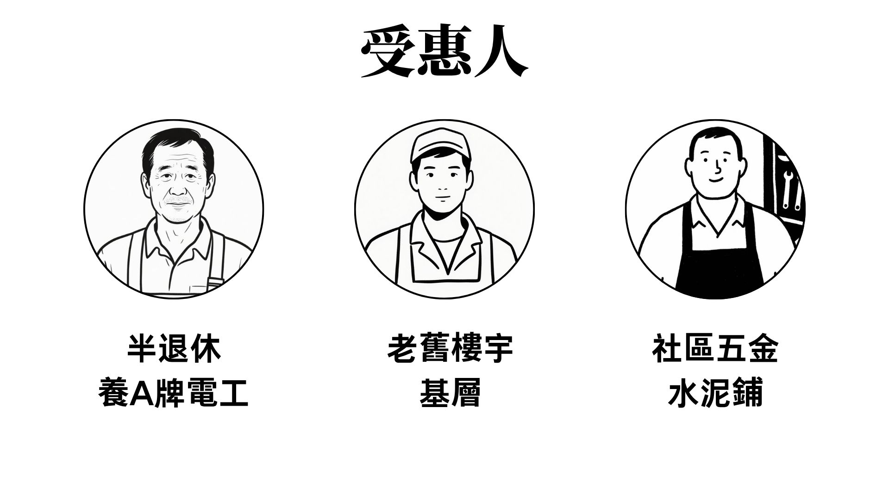
受惠人有半退休養A牌電工、老舊樓宇的基層、社區五金水泥鋪。
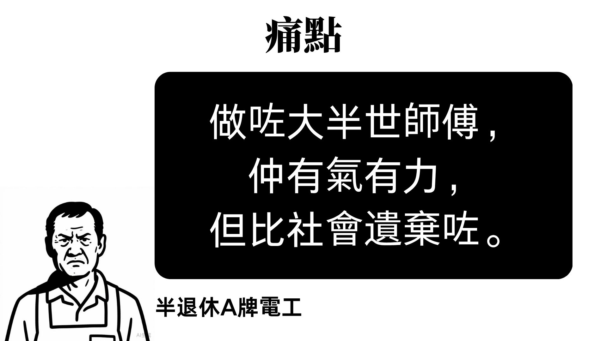
現在半退休電工的痛點是，干了大半輩子，但被社會遺棄。
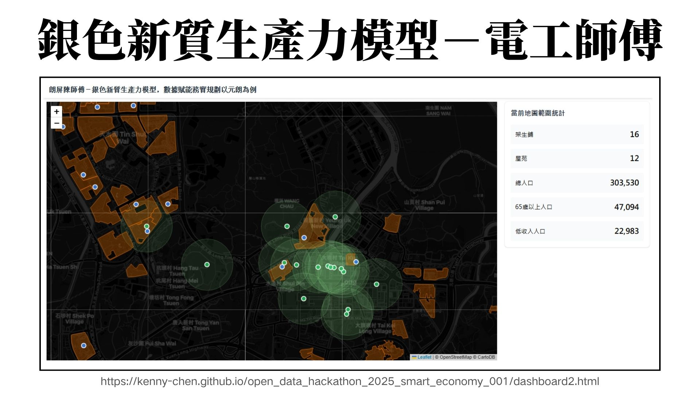
因此，我來帶來了銀色新質生產力模型。
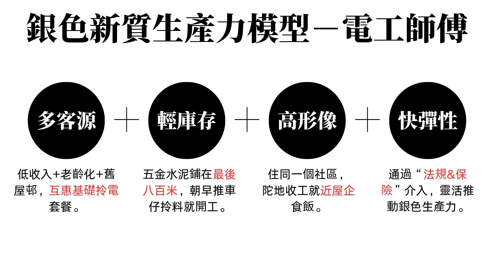
受惠人最關心四個指標，分別是客源、庫存、形像、彈性。
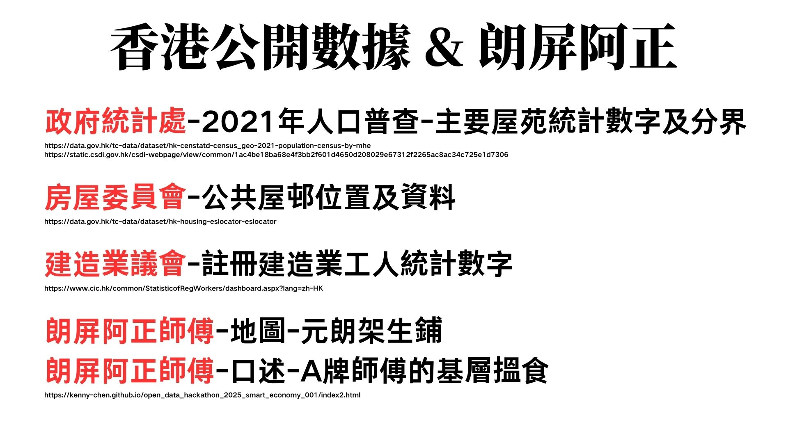
我們用到了朗屏阿正的經歷，和⾹港公開數據，包括政府統計處、房屋委員會、建造業議會。
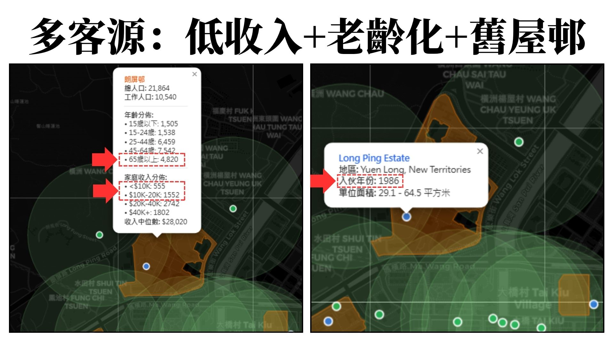
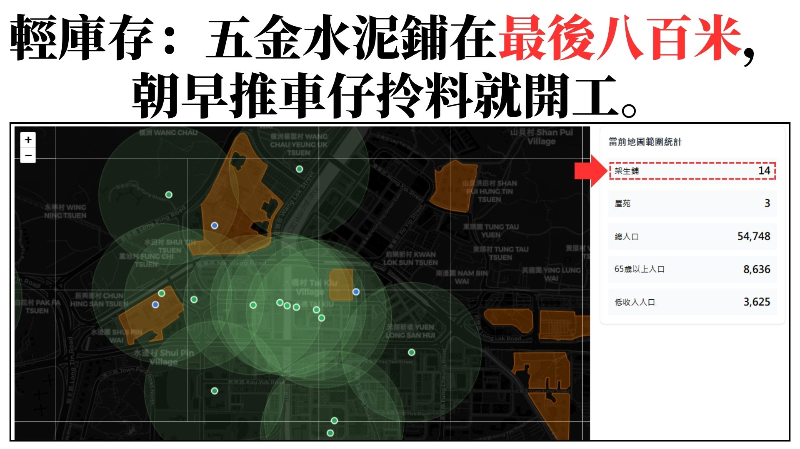
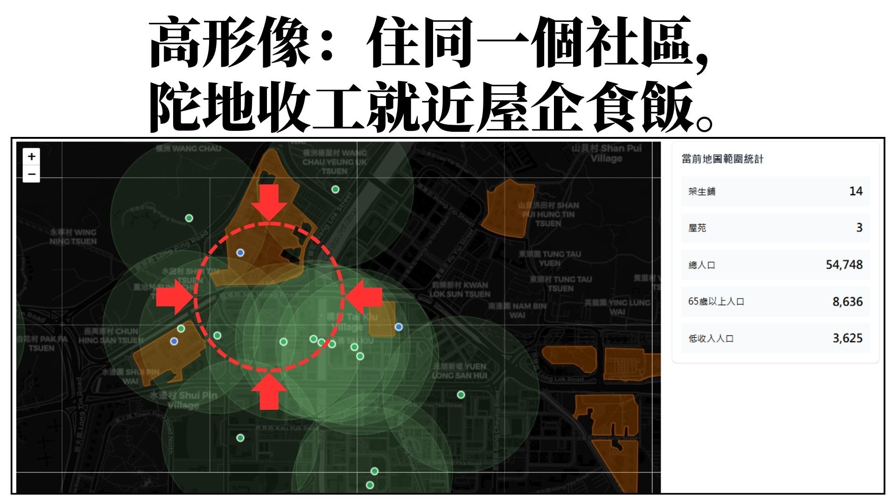
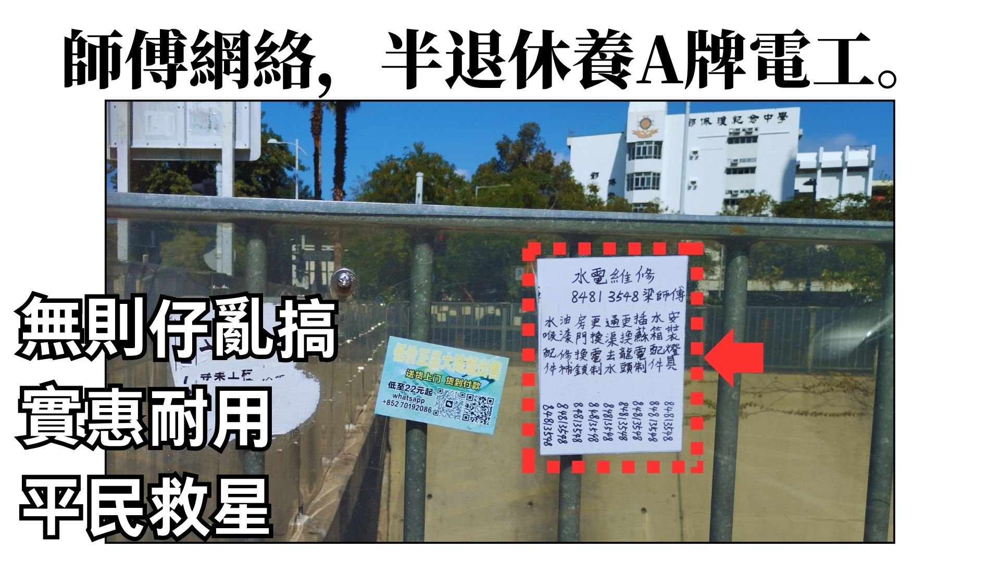
半退休電工師傅的優勢，是實惠耐用、平民救星。
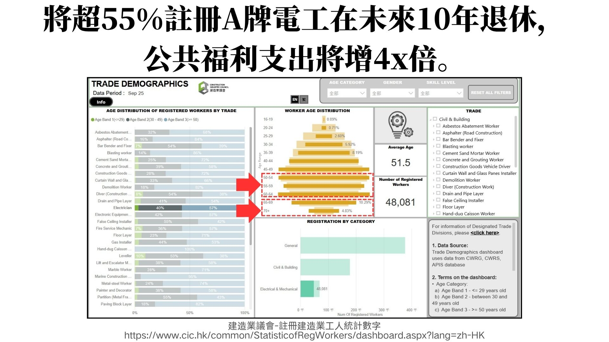
但將超55%+註冊A牌電工在未來10年退休，公共福利支出將增4x倍。
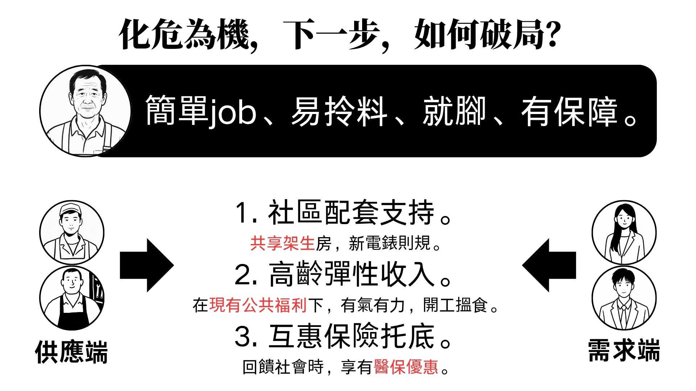
下一步，化危為機，如何破局？我們聚焦四個核心需求，簡單工作、完善工作環境和作業配套、充足保障。